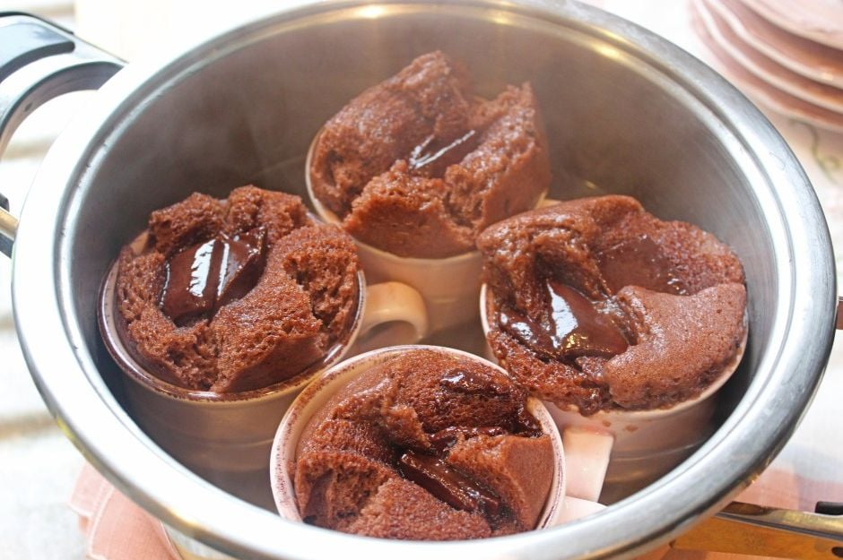
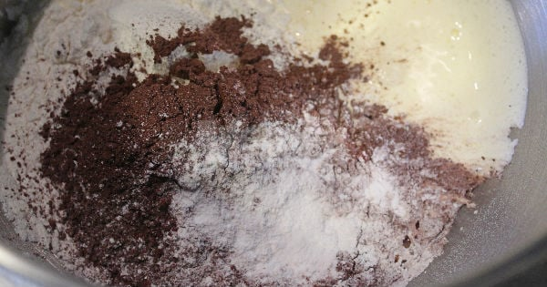
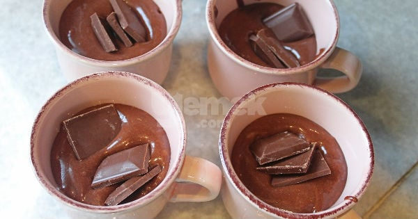
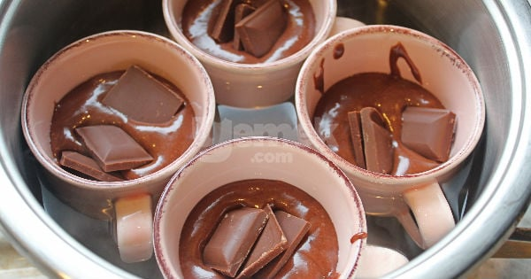
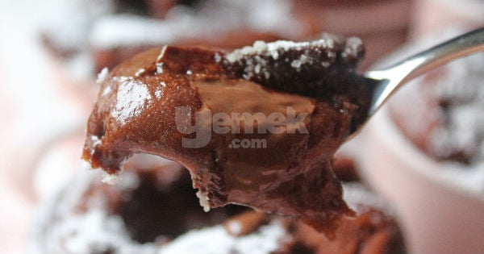

...Tencerede Sufle
İnanılmaz derecede lezzetli, yoğun çikolata tadından
adeta başınızı döndürecek kadar güzel bir tarifle karşınızdayız.

Kaç Kişilik: 4 Adet Hazırlama Süresi: 5 Dakika Pişirme Süresi: 10 Dakika
Tencerede Sufle Tarifi İçin Malzemeler
- 1 çay bardağı toz şeker
- 1 adet yumurta
- 1 çay bardağı sıvı yağ
- 1 çay bardağı süt
- 1 su bardağı un
- 2 yemek kaşığı kakao
- 1 paketvanilya
- 1 tatlı kaşığı kabartma tozu
- 80 grambitter çikolata
Üzeri İçin
- 1/2 çay bardağı pudra şekeri
Tencerede Sufle Nasıl Yapılır?
- Geniş tabanlı bir tencereye yaklaşık olarak 3 parmak yüksekliğinde su koyup ocağa alın ve kaynamaya bırakın.
- Yumurta ve toz şekeri köpürene kadar çırpın.
- Ardından yağ, süt, un, kakao, vanilya ve kabartma tozunu da ekleyip tekrar karıştırın.

- Hazırladığınız kek harcını fincanlara paylaştırın, fincanların yarısından biraz daha fazla dolmasına özen gösterin, ağzına kadar doldurmayın. Çikolatayı kırıp fincanlara paylaştırın. >

- Kaynamakta olan suya fincanları oturtun. Su fincanların yarısına kadar gelmelidir.
- Tencerenin kapağını kapatın ve bu şekilde 10 dakika pişmeye bırakın.

- Kabarıp piştiklerinde tencereden alın ve üstlerine pudra şekeri serptikten sonra sıcak olarak servis edin.

Afiyet Olsun!!!